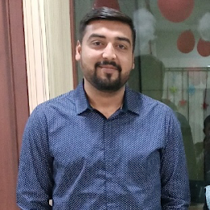

Kashyap Trivedi

Professional Summary
An experienced Business Management professional with a proven track record of success in MIS operations.
Skilled in developing and executing strategies to drive operational excellence and improve customer satisfaction
Education
- Bachelor of Engineering in Information Technology - From Gujarat Technological University- (2015-2018)
Work History
MIS - Executive | Richminds Digital Pvt.Ltd(Current)
- Maintain and support existing management information systems (MIS)
- Prepare and update MIS documentation to facilitate easy system maintenance and efficient operations
- Perform periodic data analysis to generate accurate, up-to-date reports
- Support the management team by providing analytics information reports
- Analyze business information to improve the efficiency of computer system processes
- Generated and customized daily, weekly, monthly and quarterly data reports as per process requirements
- Assisted in management decision-making processes with up-to-date tables, charts and pivot reports
- Created, updated and shared productivity reports on MIS dashboard
Analyst|Searce Co-sourcing Pvt.Ltd (4 Years and 6 Months)
- Validated results and performed quality assurance to assess accuracy of data.
- Researched and recommended process improvements designed to mitigate operational and financial risk.
- Investigated and addressed system issues to enhance usability and improve functionality.
- Boosted customer experiences by delivering superior customer service, issue resolution and merchandising.
- Testing Excel macros that built on VB.Net.
- Testing macros that build under python platform.
- Discovered root causes of problems and identified appropriate solutions.
Technical Skills
- Advance Excel : ⭐⭐⭐⭐
- Technical Support :⭐⭐⭐⭐
- HTML :⭐⭐⭐
- Supply Chain operations:⭐⭐⭐⭐
Awards and Certifications
- Rewards and Recognition(RnR) Above & Beyond Performer -Receive RnR as a Team member in Process modernization | Quarter 3(July-August-Sept) 2022
Other